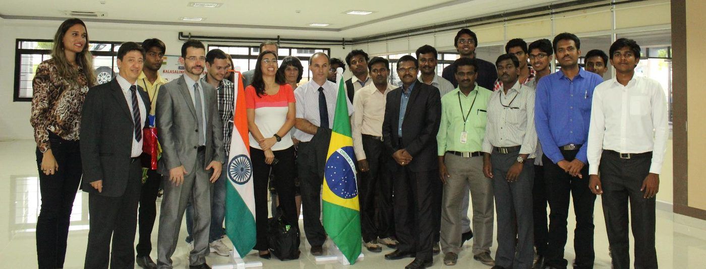
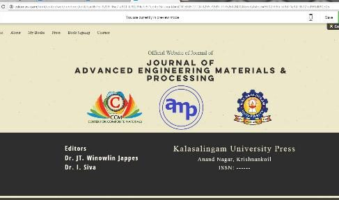
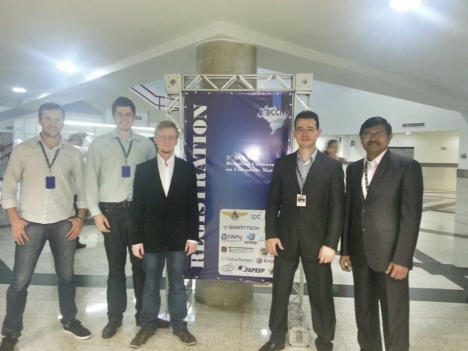
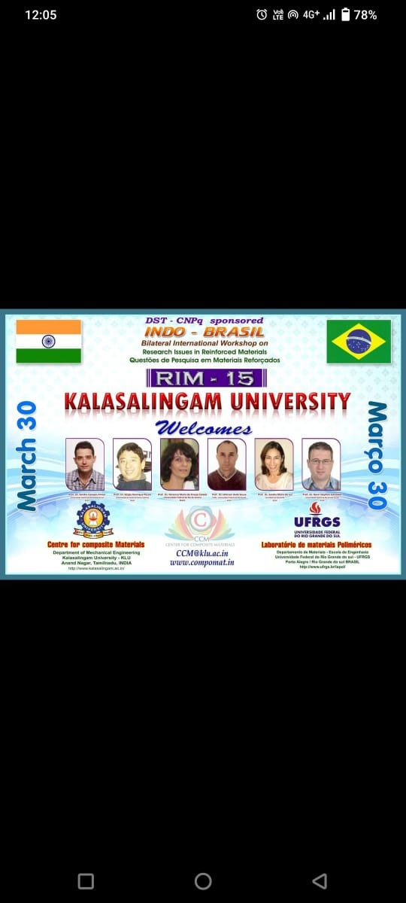
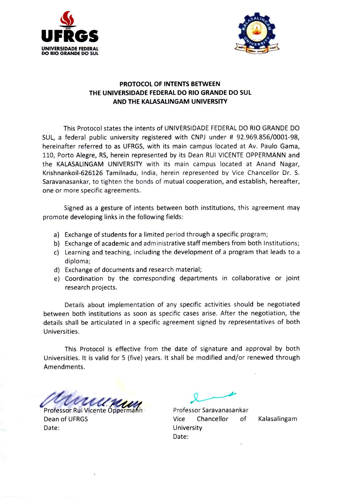
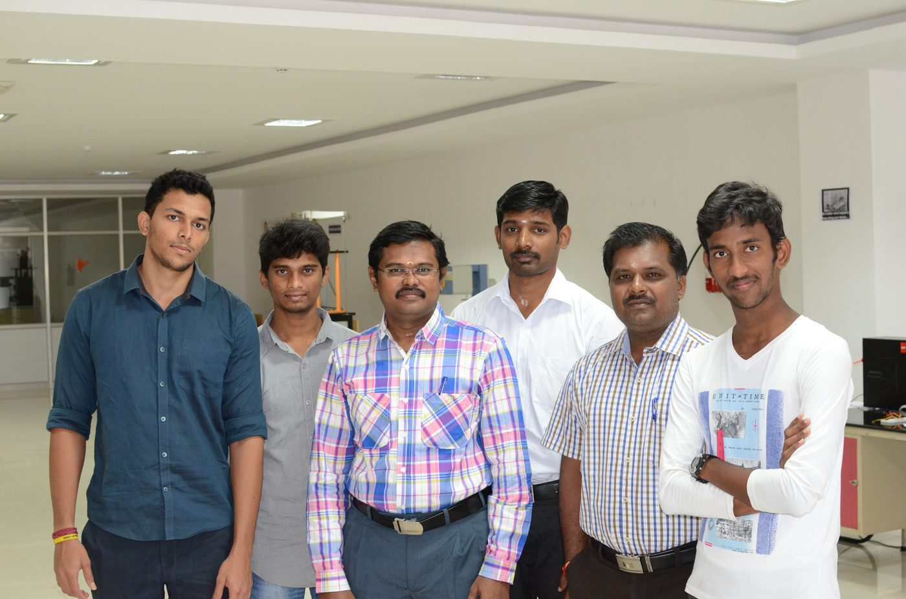
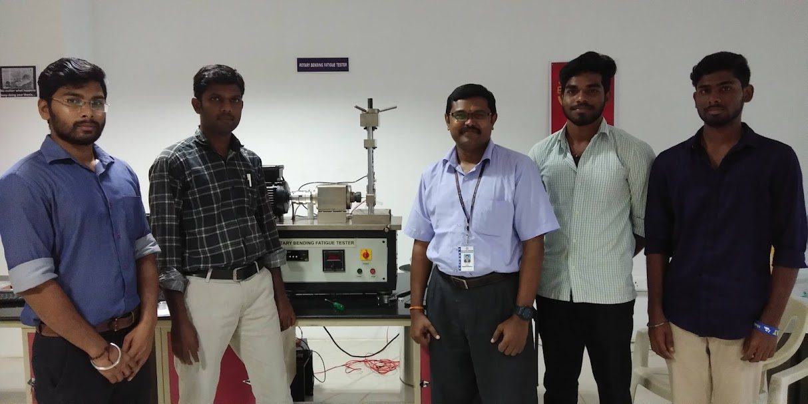

Events
31 events organized over 13 years
International conferences, the RIM workshop series, bilateral meetings with Brazil, and summer training programs — building a research community around composite materials.
International Conferences
Connecting the global composites community


IC on Advances Materials and Processing (AMP 2017)
27 March 2017 · Kalasalingam University
Flagship bilateral conference bringing together researchers from India and Brazil, organized in partnership with UFRGS, Porto Alegre. Featured researchers from five countries, special journal issues in multiple international publications.


Research Issues in Reinforced Materials (RIM 2015)
30 March 2015 · Kalasalingam University
International conference with speakers from Brazil (UFRGS, UFRJ, UESC, UnB), featuring Prof. Sandro C. Amico and five other Brazilian professors. Proceedings published as a special issue in a peer-reviewed journal.
RIM Workshop Series
Annual technical workshops, 2011–2018
Research Issues in Materials (RIM) — a biannual series bringing international experts to campus for focused technical workshops on composite materials, tribology, and characterization.
- Dr. T.P.D Rajan — NIIST, Trivandrum
- Dr. S. Anantha Kumar — NIIST, Trivandrum
- Dr. B. Suresha — NIE, Mysore
- Dr. P. Jeyaraj — NIT, Surathkal
- Dr. V.S. Sreenivasan — VVCE, Tisyanvilai
- Dr. Ramesh Narayanan — ISRO, Trivandrum
- Dr. R. Muralikannan — SIT, Madurai
- Dr. Viviane Muneeze — UFRN, Brazil
- Mr. Alan Brum — UFRGS, Brazil
- Dr. Sivakumar — UTeM, Malaysia
- Dr. X. Gao — Aalto University, Finland (Online)
- Dr. Krishna Raja — DRDO, Bangalore
- Mr. Nagappan — Integra Auto Pvt. Ltd., Chennai
- Dr. Sandra Maria da Luz — UnB, Brazil (Online)
- Mr. Guru Raj — FEA Solution, Chennai
MoU & Student Exchange
India–Brazil academic exchange, 2014–2019

Under a formal MoU with UFRGS, Porto Alegre (2014–2019), three students and faculty traveled between India and Brazil for research exchanges. The outcomes included joint publications, a shared laboratory setup, and a bilateral PhD supervision track.
- 2 UG students traveled to UFRGS, Brazil (6 months) — studied 2 courses, completed project, published articles
- 1 PG student came from Brazil to India — completed a one-year degree, published a journal article
- 1 PhD student traveled to UFRGS, Brazil (6 months) — published 2 articles
Technical Training & Internships
Summer internships on composite manufacturing


Annual summer internship programs on composite manufacturing, characterization, and product development — open to students from institutions across India.
- 2015 — Students from IIIT-AP; published two journal articles
- 2016 — Students from MG University, Kerala; two conference publications
- 2017 — Students from NIE Mysore; one conference paper
- 2018 — Students from Cummins College, Pune; published two journal articles